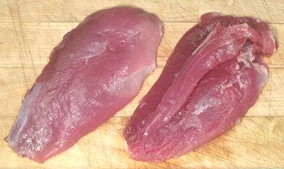

Duck Breasts

Forget about finding duck breasts in markets in Los Angeles - if you want
breasts you'll have to buy whole ducks and figure out what to do with the
rest. The reason is simple - the breasts are all sold to the restaurant
trade where the highest price can be had. Prestigious duck recipes that don't
call for whole duck generally call for breast. Duck breasts (both halves
together) weigh around 13 to 14 ounces (boneless). 9 to 10 ounces (67%)
is meat, the rest being skin and fat - which is almost always left in
place for cooking.
Do not expect white meat - duck is all dark and the meat of all parts
tastes much the same. On the other hand, you won't have flavorless cardboard
breast meat as with commercial chickens.
More on Working with Ducks.
Buying:
Buy a whole duck and figure out how to use the
rest of it. Nearly all breasts not attached to the rest of the duck go
into the restaurant trade where a high price can be had.
Prep:
Not much prep required, once you've got them off
the Duck. Most recipes call for breasts to be sliced with fat and skin
on the edge of each slice. Note that the "tenderloin" (the inner strip
- see right specimen in photo above) will come loose, it has almost no
adhesion to the rest of the breast.
Cooking:
Use only duck recipes. This is dark meat and
takes a lot longer to cook than chicken breast - and the skin and fat
is almost always included. This is not low calorie fare.
bd_dkbrstz 090704 - www.clovegarden.com
©Andrew Grygus - agryg@clovegarden.com - Photos on this
page not otherwise credited are © cg1 -
Linking to and non-commercial use of this page permitted